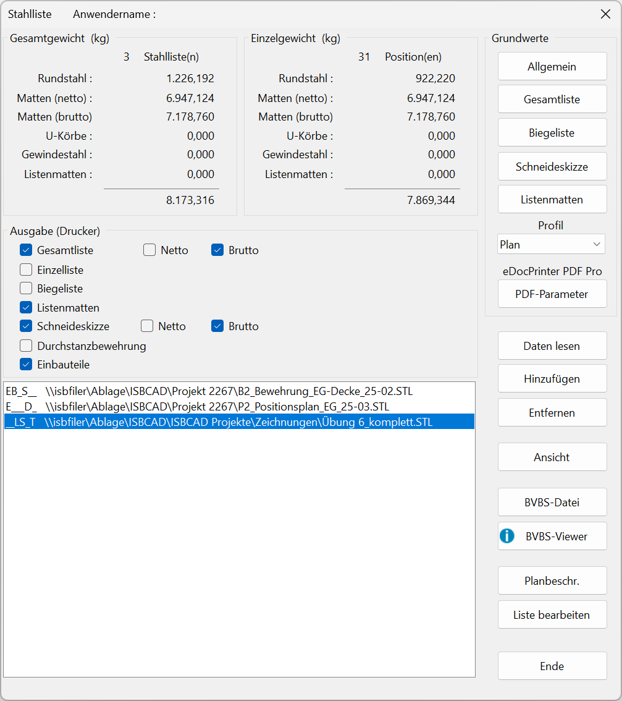

")
")
 /
/ 
Konfiguration der Stahllistenausgabe.
Optionen im Dialog "Stahlliste"
 |
Gesamtgewicht
Hier wird die Summe der Rundstähle und Matten aller ausgewählten Zeichnungen erfasst. Wenn mehrere Pläne zusammengefasst werden sollen, klicken Sie auf Hinzufügen.
Einzelgewicht
Die Gewichte der markierten Datei werden hier angezeigt. Wenn mehrere Stahllisten markiert sind, werden die Gewichte mit 0,000 kg angegeben.
Ausgabe (Drucker)
Auswahl der Listen, die in der Stahlliste ausgegeben werden sollen.
Listentypen (Gesamtliste, Biegeliste usw.)
Markieren Sie in der Dateiliste die entsprechenden Dateien und wählen Sie durch das Setzen von Haken die entsprechenden Stahllistentypen (Biegeliste, Einzelliste usw.). Die Listentypen werden allen markierten Dateien zugewiesen. Weitere Dateien können Sie mit der Schaltfläche Hinzufügen in die Liste laden.
Optionen für das Markieren mehrerer Listen
Einzeln markieren |
Strg + linke Maustaste |
Alle markieren |
Strg + A |
Im Block markieren |
Klicken Sie die erste Liste an, die markiert werden soll und anschließend, bei gedrückter Umschalt-Taste, die letzte Liste. Alle Listen, die sich zwischen den ausgewählten Listen befinden, werden markiert. |
Listentyp generieren? (Checkbox)
|
Listentyp wird nicht generiert. |
|
Listentyp wird generiert |
Listentyp ist innerhalb der in der Dateiliste markierten Dateien nur einmal vorhanden. |


Netto; Brutto
Sie können für die Mattengewichte den Brutto- und/oder Nettowert ausgeben lassen.
Dateiliste
Dateinamen mit kompletter Pfadangabe der ausgewählten Stahllisten.
Präfix
Das Präfix kennzeichnet die enthaltenen Listentypen:
·(E) Einzelliste
·(B) Biegeliste
·(L) Listenmatten
·(S) Schneideskizze
·(D) Durchstanzbewehrung
·(T) Einbauteile
Grundwerte
Allgemein
Allgemeine Einstellungen für Stahllisten. Ruft den Dialog Stahlliste Grundwerte Allgemein auf.
Stahlliste Grundwerte Allgemein (Dialog)
Gesamtliste
Allgemeine Einstellungen für die Stahllisten-Gesamtliste. Ruft den Dialog Stahlliste Grundwerte Gesamtliste auf.
Stahlliste Grundwerte Gesamtliste (Dialog)
Biegeliste
Allgemeine Einstellungen für die Stahllisten-Biegeliste. Ruft den Dialog Einstellungen Stahlliste auf.
Einstellungen Stahlliste (Dialog)
Schneideskizze
Allgemeine Einstellungen für die Stahllisten-Schneideskizze. Ruft den Dialog Stahlliste Grundwerte Schneideskizzen auf.
Stahlliste Grundwerte Schneideskizze (Dialog)
Listenmatten
Allgemeine Einstellungen für Listenmatten. Ruft den Dialog Stahlliste Grundwerte Listenmatten auf.
Stahlliste Grundwerte Listenmatten (Dialog)
Auswahl des Ausgabeprofils. Profile können Sie im Dialog Stahlliste Grundwerte Allgemein erstellen und bearbeiten.
PDF-Parameter
Allgemeine Einstellungen für die Ausgabe der Stahlliste mit dem PDF-Drucker eDoc Printer PDF Pro und eDoc Printer PDF Pro GLASER.
PDF-Parameter (Dialog)
Weitere Dialogoptionen
Daten lesen
Ersetzt die Stahlliste der aktuell geöffneten Zeichnung durch eine andere zu wählende Stahlliste. Öffnet den Dialog Öffnen.
Wählen Sie den Ordner mit der gewünschten Stahllistendatei (*.stl) und aktivieren die Datei, für die eine Stahlliste erzeugt werden soll. Diese wird in die Dateiliste eingetragen, wobei vorhandene Einträge entfernt werden.
Hinzufügen
Fügt der Dateiliste weitere Stahllisten hinzu. Öffnet den Dialog Öffnen.
Im Dialog können Sie mehrere Dateien gleichzeitig markieren, indem Sie mit der Tastenkombination Strg + Linke Maustaste (LM) bzw. Umschalt + LM einzelne Dateien bzw. Dateibereiche auswählen. Klicken Sie auf Öffnen, um die Dateien der Stahlliste hinzuzufügen.
·Für die neu hinzugefügten Stahllisten werden die Listentypen eingestellt, die mit einem Haken versehen sind.
·Bei verschiedenen Angaben in den Planbeschreibungen können Sie durch Auswahl aus der Ausklappliste angeben, welche Angaben für die Gesamtliste übernommen werden sollen. Selbst eingetragene Texte werden nicht ausgewertet. Die gewählten Angaben können Sie nachträglich unter Stahlliste Grundwerte Gesamtliste (Dialog) ändern. Diese Angaben gelten nur für die Gesamtliste. Für die Einzelliste, Biegeliste usw. gelten die Angaben, die in der Planbeschreibung der aktuell geöffneten Zeichnung unter [Konst 3 | PlanBe] eingetragen sind. Mit der Funktion Planbeschreibung im Dialog Stahlliste können die Angaben temporär für die Ausgabe geändert werden.
·Wenn Makrotexte in Planbeschreibungen verwendet wurden, werden sie beim Hinzufügen aufgelöst. In der Auswahl wird der tatsächliche Textinhalt angezeigt.
Entfernen
Entfernt die markierte Datei aus der Dateiliste. Markieren Sie vorab eine Zeile oder mehrere Zeilen.
Ansicht
Konfiguration der Stahllisten-Ausgabe. Öffnet den Dialog Ansicht mit verschiedenen Ausgabefunktionen. Die generierten Stahllisten werden als Vorschau angezeigt.
» Ansicht (Dialog)
Export von Stahl- und Biegeinformationen in eine ABS-Datei (*.abs) "Allgemeine-Bewehrungs-Schnittstelle". Die ABS-Datei kann von Biegemaschinen gelesen und ausgewertet werden. Dadurch muss der Biegebetrieb die Bewehrungsdaten der Stahlliste nicht manuell erfassen.
Die Informationen in der ABS-Datei sind konform mit der entsprechenden Richtlinie des BVBS - Bundesverband Software und Digitalisierung im Bauwesen e.V. Die Richtlinie finden Sie im Downloadbereich der Website des BVBS unter www.bvbs.de. ISBCAD 2026 unterstützt die Version BVBS 3.1.
BVBS-Datei erzeugen ·Beim Aufruf des Dialogs Stahlliste werden die Bewehrungsdaten der aktuell geöffneten Zeichnung automatisch der Dateiliste hinzugefügt. Um weitere Stahllisten hinzuzufügen, lesen Sie die Stahllisten (*.STL) mit Hinzufügen in die Dateiliste ein. ·Markieren Sie in der Dateiliste die STL-Datei, die ausgegeben werden soll, und setzen Sie im Dialogbereich Ausgabe (Drucker) bei Biegeliste einen Haken. ·Klicken Sie auf BVBS-Datei. ·Falls Sie mehrere Stahllisten eingelesen haben, und für die Listen den Haken bei Biegeliste gesetzt haben, können Sie entscheiden, ob die Bewehrungsdaten in einer Datei oder für jede Stahlliste einzeln gespeichert werden sollen:
·Geben Sie im Dialog den Speicherort und den Dateinamen für die BVBS-Datei an. ·Klicken Sie abschließend auf Speichern.
|

Öffnet einen Hinweis zum BVBS-Viewer der LENNERTS & PARTNER GmbH. Mit einem BVBS-Viewer können Sie ABS-Datei öffnen und die einzelnen Positionen in einer 3D-Ansicht betrachten. Unter dem in der Meldung angegebenen Link haben Sie die Möglichkeit, den Viewer kostenlos von der Hersteller-Website herunterzuladen.
Öffnet einen Dialog mit den unter [Konst 3 | PlanBe] eingegebenen Daten.
Für Teillisten oder Auszüge aus der Stahlliste können Sie die Angaben in der Planbeschreibung temporär für die Ausgabe der Stahlliste ändern. Sind Makrotexte teil der Planbeschreibung, wird hier der Textinhalt angezeigt. Nach dem Schließen des Stahllisten-Dialogs werden die Änderungen verworfen und die vorherigen Angaben wiederhergestellt.
Liste bearbeiten
Die Stückzahlen bzw. laufenden Meter (lfdm) von Positionen können in der markierten Stahlliste temporär für die Ausgabe bearbeitet werden. Positionen können gelöscht werden. Nach dem Schließen des Stahllisten-Dialogs werden alle Änderungen verworfen und die ursprünglichen Angaben wiederhergestellt.
Ende
Schließt den Dialog.
Zugehörige Aufgaben:
Zugehörige Referenzen: